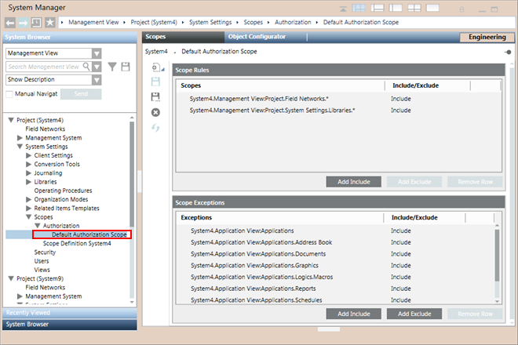
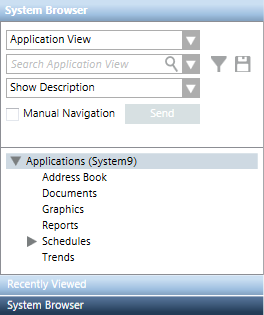
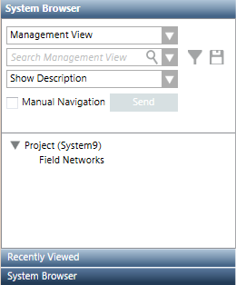

Overview of Scopes
Scopes is a feature that lets you collect and configure system objects (referenced as trees, subtrees, and nodes in System Browser) as a scope definition which is when
- assigned in the Scope Rights for a user in a user group or a management station group configured in the Security tab, controls the visibility of group of objects in the System Browser.
For example, the access to the operator can be limited only to the network objects that are necessary for the operation of the building automation system. - dragged-and dropped in configurations wherever a group of objects is needed such as journaling, notification, macros, OPC and so on, influences the resultant output of that application by acting as a filter.
For example, when a scope definition is in a macro, a command is sent to all objects that are part of the scope, but are only executed on the objects for which the execution criteria are met.
In Engineering mode, using Scopes, you can create scope definitions that include or exclude nodes and subtrees from the views in the System Browser using Scope Rules.
You can also define deviations to the configuration of Scope Rules using Scope Exceptions.
Examples of Scope Definitions
- Include all objects of libraries from the Management View (Scope Rule Include )
- Exclude all objects of libraries from the Management View that belong to Fire and Video (Scope Rule Exclude)
- Exclude all objects of libraries from the Management View but include only Fire_Detection_HQ_1 (Scope Exception Include)
- Exclude Building2.DeliveryRamp.Gate1 from the user-defined view (Scope Exception Exclude , node only)
- Exclude all objects of panel1 from the physical view (Scope Exception Exclude, subtree)
Predefined System Scope Definition
The system has a predefined Scope, which is available under Scopes> Authorization > Default Authorization Scope.

The predefined Default Authorization Scope node contains two Scope Rules Include rows and some Scope Exceptions Include rows.
If you are a member of a user group with this predefined Scope assigned and you log onto the system you see the following in Application View and in Management View.
Predefined Scope in Application View | Predefined Scope in Management View |
 |  |
Scopes in Distributed System
In a distributed environment, scopes are configured locally. This means the system objects, used for Scope configuration must be local to the Desigo CC server. However, depending on the distribution connection, you can configure a Scope for other systems. You can either view or configure the scope definition from the local originator system for the partner system or from the partner system for the originator system.
The following applies when you work with scopes in distributed environment on the originator or the partner system:
- The objects configured in the scope definition must be local to the system for which you are configuring the Scope definition.
- You cannot drag and drop a scope definition created in the originator system to the partner system and vice versa, even though both the systems are in distribution.
- The Scope definitions can act as filters for only local applications such as journaling, macros and Notification.
For example, the scope definition used in the journaling definition must be local to the system for which you are configuring the journaling definition. - You can drag-and-drop only the local scope definition to the local Security Group, thus providing an easy and precise way to control the access that members of the group have.
Scope Rights and Security
Scope definitions when linked in the Scope Rights for a user in a user group or a management station group configured in the Security application control the visibility of group of objects in the System Browser. The users assigned to that user group or management station group when logon to the system, can view only the configurations defined in the Scope definition. The following are the rules for assigning Scope Rights for a scope definition:
- Only the system objects that are configured in the scope definitions (not excluded) are available to the logged-in user in System Browser.
- If a parent system object is not included in one of the scope definitions assigned to the group, none of its children are visible in the System Browser tree. They are visible only in applications such as Graphics, Trends, or Reports, if the user has access to such objects.
- To exclude a system object it should not be included in the Scope Rule/Exception Include row of the Scope definitions.
- To exclude a system object it must be excluded from all the scope definitions assigned to a user.
- You must include the Hierarchy tree root node of the selected view as one of the Include rows in Scope Rules/Exceptions of a Scope definitions to view its child nodes.
- An object in the Scope Rule/Exception path is as an unknown object, if it meets any of the following criteria:
- Deleted
- Moved to another location in the System Browser tree
- Deleted and created again at the same location in the tree
- Not in the Scope of the logged-in user
- An unknown object, present in the path of a Scope Rule/Exception Include/Exclude row, makes the path invalid and is indicated in red.

NOTE:
Modifying the Scope Rights associated with a user group requires stopping and restarting the client to activate the modifications. Since it is not possible to exit the client in closed mode, please contact your system administrator to change the management station settings so you can stop and restart.